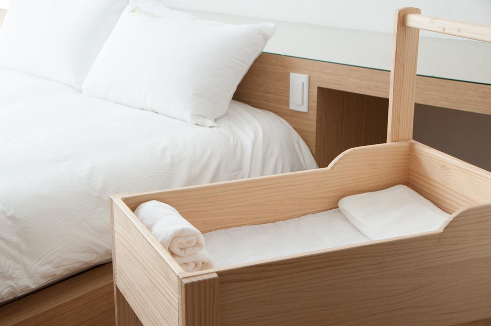
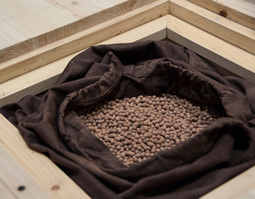
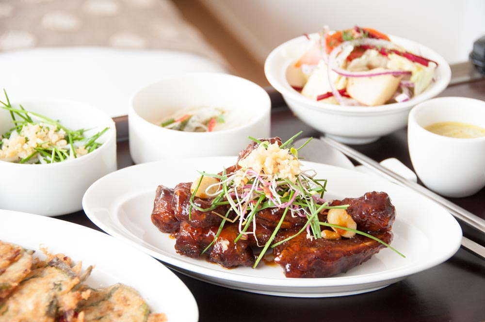
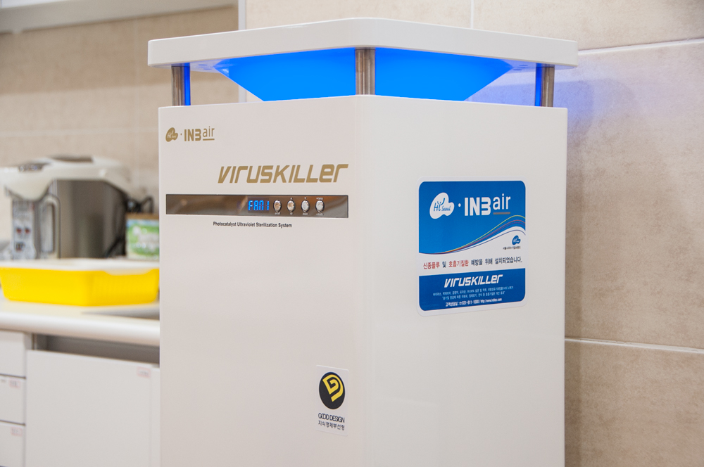
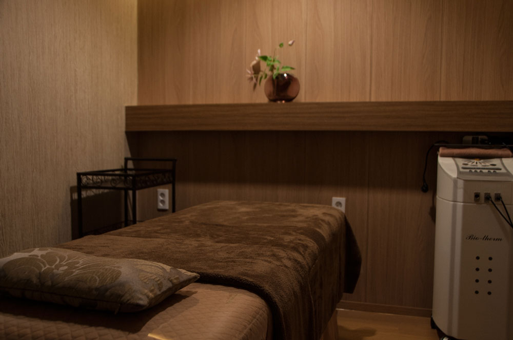

조리원 소개
운영진 모두 RN(정식 간호사) 및 현직 간호 대학교 교수입니다. 수년간 대학 병원 근무 경력 과 산후조리원 운영 경험을 바탕으로 한 노하우와 정성을 온전히 담아 Birthday 산후조리원에서만 누리실 수 있는 편안한 휴식과 아름다운 추억을 선사합니다.
Birthday는 최고급 시설을 갖춘 산후조리원입니다
Birthday 산후조리원의 모든 룸은 전면 창을 통해 자연채광 및 자연환기가 가능하여, 탁 트인 넓은 공간 확보로 힘들었던 산모님의 마음 속 까지 시원하게 하는 Healing Space입니다. 우수한 조망으로 높은 소독효과 및 산후우울증 예방의 증진을 기대할 수 있습니다. 또한 각 실의 포근한 침상과 최고급 호텔식 침구 세트, 개별 좌욕기, 메델라 유측기, 공기청정기, 개별냉난방 시스템, LED TV, 외부 세면대 및 수유용품일체 등 모든 시설과 물품은 아기와 산모의 휴식과 편의를 위해 정성껏 준비되어 있습니다.
또한 힐링스톤 편백나무 족욕 시설은 말초 혈액 순환을 증가시켜 부종완화 및 기초체온을 올려주므로 숙면을 취하는 데 도움을 줍니다. 특히 편백나무에서 방출되는 피톤치드는 항생물질로 민감한 피부와 아토피 예방에 도움을 주고 행복 호르몬인 세로토닌을 방출하여 몸이 가뿐해지고 기분까지 좋아집니다.
새집증후군 예방을 위해 전문 업체인 반딧불이의 공인된 프로그램을 시공하였습니다. 이후 각 룸마다 공기청정기 배치, 자연 환기, 간접 환기 등으로 쾌적하고 건강한 환경을 유지하고 있습니다.
- 자연채광 및 자연환기
- 최고급 호텔식 침구 세트
- 쾌적하고 건강한 환경
Birthday 산후조리원은 어머님의 마음을 담아 최고의 맛을 느낄 수 있는 영양식단을 제공합니다
매일 아침 배달되는 신선한 재료를 사용하여 미각을 살리고 산후비만예방과 필수영양을 모두 고려한 식단으로 산모님을 세심하게 배려합니다. 모유 수유 촉진차를 자유롭게 이용할 수 있도록 셀프바 운영합니다. 뿐만 아니라 어혈을 풀어 혈액순환을 원활하게 하고 오로 배출과 모유수유에 도움이 되는 한약을 제공하며, 필요한 경우에는 산후풍 예방을 위한 침 무료서비스를 해드립니다.
- 신선한고 맛있는 영양식단
- 건강을 위한 한약제공
- 무료 침 서비스
아기 전담제를 실시하여 책임감 있는 Baby Care를 합니다
아기 입소 정원 대비 간호사 최다배치 산후조리원이며, 신생아실에서 아기별 1:1 맞춤케어를 실시합니다. 또한 특별한 격리가 필요한 아가를 위해 신생아실을 두 구역으로 구분하여 운영합니다. 운영진 전원 정규간호사(RN, Registered Nurse.)입니다. 주 3회 소아과 전문의 회진을 통해 아가 건강 상태를 철저히 체크합니다.
1일 1회 아토피 예방을 위한 비타민 목욕을 시키며 황달 측정기가 비치 되어있어 아가의 황달 상태를 매일 관리합니다. 신생아실의 마감재에 있어 친환경 무독성 소재를 사용하여 철저한 안정성과 신생아실의 습도, 온도를 최적화함으로써 최고의 환경을 조성하였습니다. 최신 해파 필터 환기 시스템과 바이러스 킬러가 설치되어 있습니다. 신생아실 1일 2회 소독합니다.
- 운영진 전원 정규간호사
- 주 3회 소아과 전문의 회진
- 바이러스 킬러 설치
정규간호사(RN, Registered Nurse)로 구성 되어 있는 모유수유 전문가선생님들이 산모님의 완모를 위해 1:1 관리를 해드립니다
각방에 메델라 유축기와 수유용품일체 등 모든 시설과 물품이 준비되어 있어서 편안하게 산모님들이 수유 할 수 있도록 도와드립니다. 개별 및 그룹으로 모유수유방법에 대한 교육을 진행합니다.
전문가를 통한 산모건강관리법, 자기 유방 관리법, 아토피 예방법, 아기 맛사지 방법, 모빌 만들기, 필라테스 요가 등 필요한 교육을 실시합니다. 산모의 산전, 산후 피부관리를 위한 명품브랜드 강남아이앤비 에스테틱 입점되어있습니다. 산전 2회(힐링 트리트먼트 32주, 릴렉스 테라피 36주), 산후 2회(1주차- 릴렉스 전신 테라피, 2주차- 체형 밸런스 전신 테라피) 무료 관리, 삼푸1회, 파라핀 테라피는 수시로 서비스, Nail Care 제공됩니다.
귀가 전 아빠와 함께 받으실 수 있는 퇴실 교육을 시켜드립니다. 아기 목욕법, 아기의 성장과 발달과정, 예방접종 등 건강 육아법 교육 및 상담을 실시합니다.
- 모유수유 전문교육
- 명품브랜드 강남아이앤비 에스테틱 입점